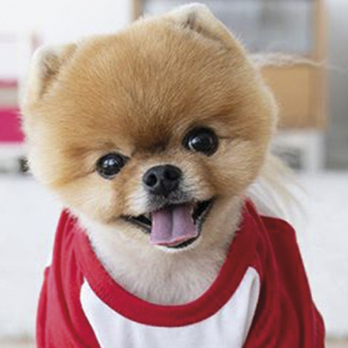

<ion-header>
  <ion-toolbar>
    <ion-title>Accounts</ion-title>
  </ion-toolbar>
</ion-header>

<ion-content>
  <ion-list> 
    <ion-item button detail *ngFor = 'let account of accounts' (click)="openModal(account)">
      <ion-label>
        <h2>{{ account.name }}</h2>
        <p>Balance: {{account.balance | number}}</p>
      </ion-label>
    </ion-item>
  </ion-list>
</ion-content>

<!-- <body>
  <div class="campos-Cad">
    <div class="superior">
      <h1>localizados</h1>
      
    </div>
    <ion-row>
      <ion-col>
        <ion-toolbar id="barra-botao-filtro" color = black>
          <ion-buttons slot="end"> 
            <ion-icon color=primary id="botao-filtro" color = light (click) = 'exibeFiltros()' name="filter-circle"></ion-icon>
          </ion-buttons>
        </ion-toolbar>

        <ion-slides>

          <ion-slide *ngFor = 'let pet of pets'>
            <div class="slide">
              <h2 class="nomePet">{{pet.nome}}</h2>
              
              <p class="DescPet">
                Mussum Ipsum, cacilds vidis litro abertis. Casamentiss faiz
                malandris se pirulitá.
              </p>
            </div>
          </ion-slide>

        </ion-slides>
      </ion-col>
    </ion-row>
  </div>
        <ion-fab-button id="bt-busca" (click)="obterListaPets()">
          
        </ion-fab-button>
</body> -->
